http://localhost:3000 · 2026-11-27T01:17:28.620Z · redusert bevegelse · bildet tas når nettet har vært stille i 2 s · fanger ikke bevegelse · fullsidebilder kuttet ved 4500 px
Profilen og Mine kort er lest fra en Steam-stubb (oppdiktet inventar, nivå 23), aldri fra Steam. Prisene som hentes én om gangen (/api/profil/priser, /api/inventar/pris) telles ikke i stillheten. I fullsidebildene står faste lag (topplinja, bunnmenyen) der de står på første skjerm; et fast lag med egen rulling (detaljen på mobil) tas med et vindu som er høyt nok til hele laget.
22.3 % av pikslene er ulike (største kanalforskjell over 40 av 255).
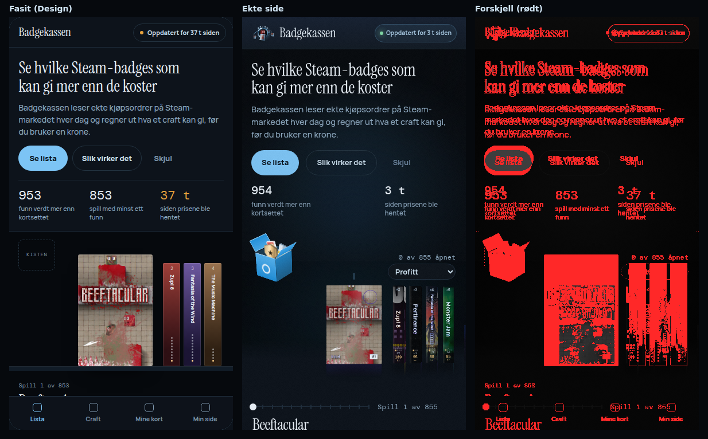
30.1 % av pikslene er ulike (største kanalforskjell over 40 av 255).
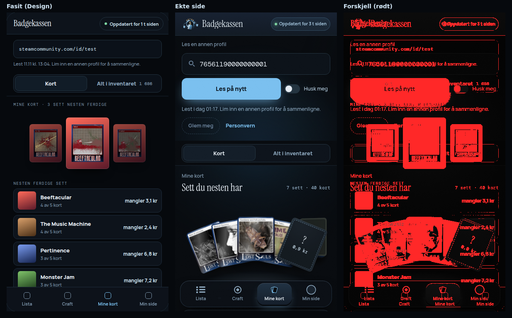
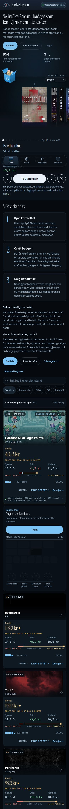
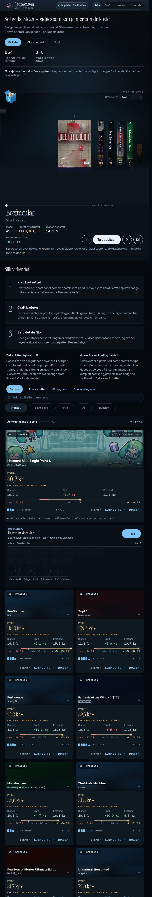
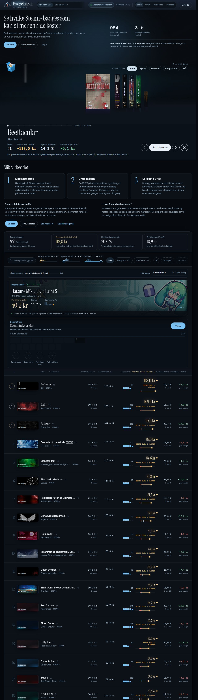
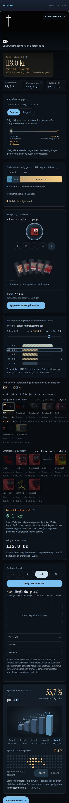
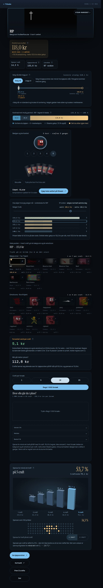
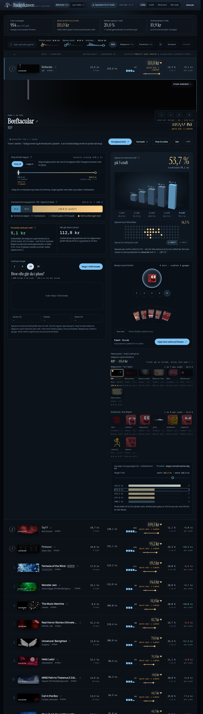
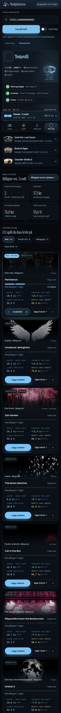
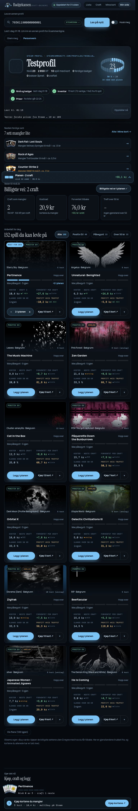
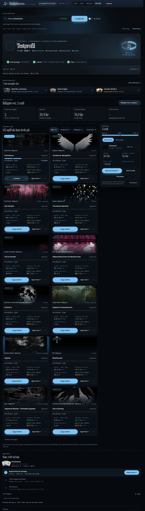
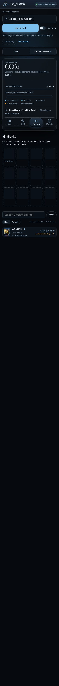
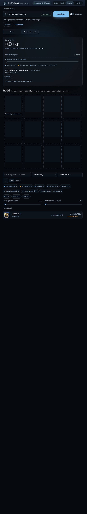
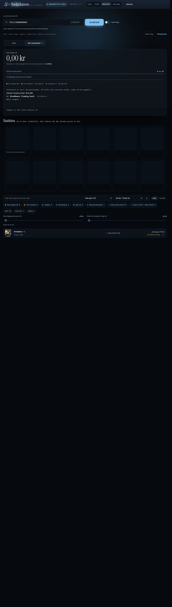